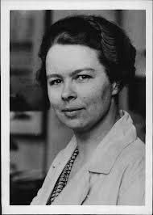
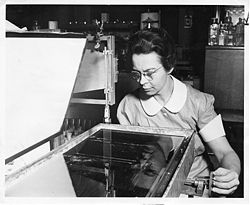

Katharine Burr Blodgett (10 ianuarie 1898 - 12 octombrie 1979) fost un fizician și chimist american cunoscut pentru munca sa în chimia de suprafață, în special invenția sa din sticlă „invizibilă” sau nereflectantă în timp ce lucra la General Electric . A fost prima femeie care a primit un doctorat în fizică de la Universitatea din Cambridge , în 1926.
Date personale
Blodgett s-a născut pe 10 ianuarie 1898 în Schenectady, New York. A fost al doilea copil al lui Katharine Buchanan (Burr) și George Reddington Blodgett. Tatăl ei a fost avocat de brevet la General Electric unde a condus acel departament. El a fost împușcat și ucis în casa sa de un jefuitor chiar înainte de nașterea ei. GE a oferit o recompensă de 5.000 de dolari pentru arestarea și condamnarea criminalului dar suspectul criminal s-a spânzurat în celula închisorii sale din Salem, New York. Mama ei a fost securizată din punct de vedere financiar după moartea soțului său, și s-a mutat în New York cu Katharine și fiul ei George Jr. la scurt timp după nașterea lui Katharine.
În 1901, mama lui Katherine a mutat familia în Franța. Au locuit acolo câțiva ani, s-au întors la New York un an, timp în care Katherine a urmat școala în lacul Saranac , apoi a petrecut timp călătorind prin Germania. În 1912, Blodgett s-a întors în New York cu familia ei și a urmat școala Rayson din New York.
Disertația ei de doctorat se referă la comportamentul electronilor în vaporii de mercur ionizați. În 1926, Blodgett a devenit prima femeie care a obținut un doctorat. în fizică de la Universitatea Cambridge.
Mai târziu în acel an, Blodgett a revenit la GE, și-a restabilit colaborarea de lungă durată cu Langmuir și a lucrat cu el la multe proiecte diferite, inclusiv la cele care implică filme subțiri. Langmuir, l-a descris pe Blodgett drept un „experimentator talentat” cu o „combinație rară de abilități teoretice și practice”. În scurt timp, a devenit un expert în filme subțiri. În 1938 a inventat sticla nereflectantă construind un film gros de 44 de molecule pe suprafața sticlei. Curând după aceasta, a dezvoltat un ecartament pentru a determina grosimea acestor pelicule subțiri. Celelalte metode pentru măsurarea acestui lucru au fost corecte doar la câteva miimi de centimetru, dar modul lui Blodgett a fost exact la aproximativ o milionime de inch. A obținut șase brevete americane pentru această lucrare. Datorită numeroaselor contribuții la știința și tehnologia filmelor subțiri, acea zonă generală este cunoscută sub numele de tehnologia Langmuir-Blodgett. În timpul celui de-al Doilea Război Mondial, Blodgett și-a îndreptat atenția asupra unor astfel de aplicații militare, precum mașinile de dezafectare a avioanelor și de protecție a fumului.
â
Istorie
În 2008 Consiliul a introdus o medalie pentru recunoașterea contribuțiilor la organizarea sau aplicarea fizicii într-un context industrial sau comercial. Inițial, această medalie a fost cunoscută sub numele de Business and Innovation Medal; din 2012 a fost redenumită Medalia Swan a Institutului de Fizică în recunoașterea lui Sir Joseph Swan, iar în 2016 a fost redenumită la Medalia și Premiul Katherine Burr Blodgett pentru a-și recunoaște contribuțiile la fizică în industrie.
Fizicianul din spatele medaliei,
Katharine Burr Blodgett a fost un cercetător american și prima femeie care a primit un doctorat în fizică de la Universitatea din Cambridge, în 1926. După ce a primit masterul, a fost angajată de General Electric, unde a inventat low- sticlă reflectorizantă invizibilă, în cazul în care acoperirea nereflectantă este numită peliculă Langmuir-Blodgett. Blodgett a fost eliberată opt brevete americane în timpul carierei sale
Premii și apartenențe:
Medalia de progres. The Photographic Society of America
Achievement Award al Asociației Americane a Femeilor Universității de
excepție Femeie a anului. American Woman Magazine
Garvan Medal of the American Chemical Society
Boston Prima Adunare a Femeilor Americane de Realizare om de știință onorat
Doctorat: Elmira College, Western College, Brown University, Russell Sage College
American Physical Society Fellow
Optical Society of America.

 Katherine Burr Blodgett (center) demonstrating surface chemistry experiments for visitors at the opening of General Electric's new Research Laboratory